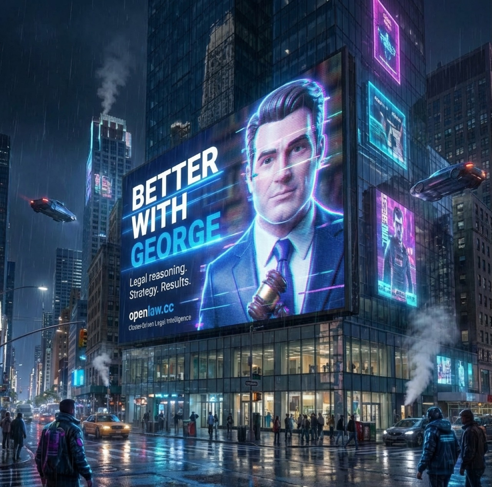
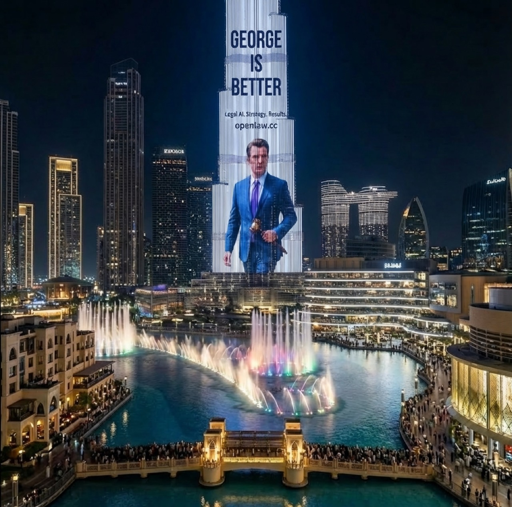
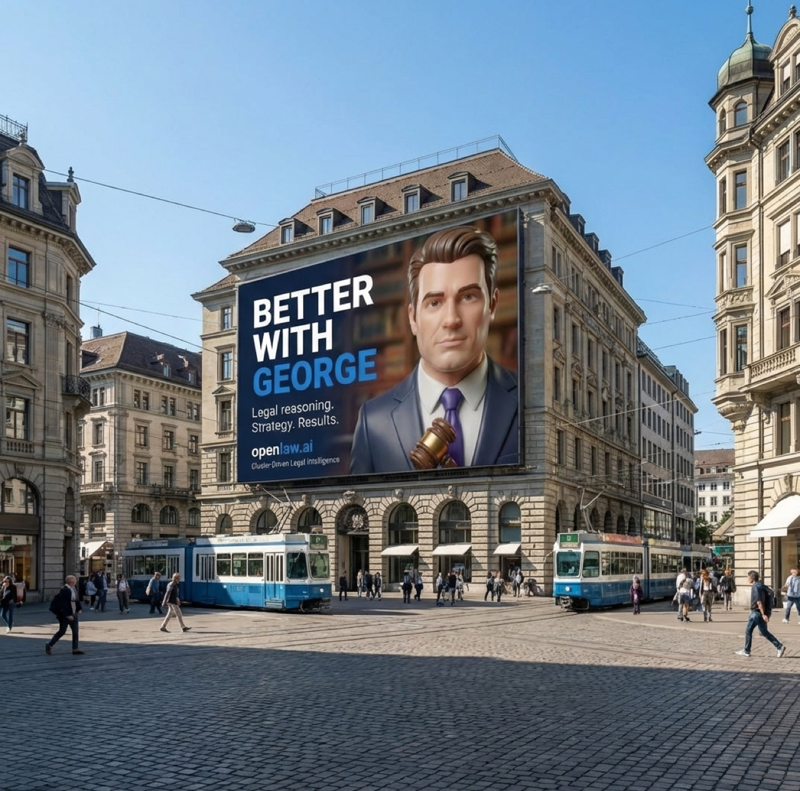

Structure
Claims, facts, posture, and leverage mapped before output begins.
Restricted signal
Not search. Not chat. Legal force.
OpenLaw is building George as a private legal intelligence system for case pressure, strategic leverage, and executional control.
Claims, facts, posture, and leverage mapped before output begins.
Reasoning aimed at moves, defenses, timing, and strategic position.
Built on a live stack with controlled surface area and selective access.

Thesis
George is being built for adversarial facts, procedural friction, and high-stakes legal work. The stack is live. The public detail stays offstage.
Console
REMOTE LINK // PRIVATE CASE CHANNEL OPEN
READY // Awaiting George output
A retro-future command surface for George outputs: less glossy AI demo, more shipboard system running pressure maps, psychological reads, and attack angles in machine light.
Texture CRT glow, scanlines, industrial restraint.
Signal George reports leverage, timing, and action.
Method Attack angle, profile map, pressure window.
Mood Sci-fi pressure with a deliberate analog memory.
Transmission
Not a launch film. A controlled transmission from the George build, cut to signal posture, motion, and intent before the public story exists.
Signal Presence before explanation.
Voice Authority without disclosure.
Use A private system learning how it wants to be seen.
Signal, not launch
Vienna / Vienna Stock Exchange
Sharper for law, sharper for finance, sharper for the people who notice both.
Tokyo
Dense, fast, and built for exactness.

Dubai
Built to look inevitable before it looks public.

Zurich
Quiet capital. Hard edge.
Core doctrine
01
Facts, parties, posture, and leverage before narrative or draftwork.
02
Strategy before output. Sequence before style.
03
Intelligence, drafting, and action living inside one controlled system.
Current status
The stack is live, the surface is selective, and the public story is intentionally incomplete.